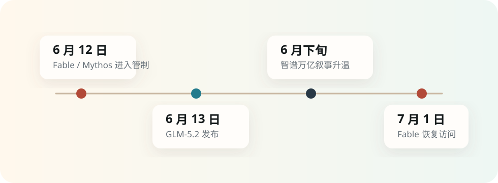

Fable 5 被封禁，智谱冲万亿：模型采购进入双供应商时代
立场很直接：智谱的机会成立，但万亿定价跑在产品验证前面。企业真正应该学到的经验，是立刻建立多模型路由和第二供应商。
6 月 12 日，美国商务部把 Anthropic 的 Fable 5 和 Mythos 5 放进出口管制清单。
Anthropic 后来在官方说明里给出解释：命令立即生效，公司无法实时核验每个用户的国籍，于是先暂停两款模型对所有用户的访问。到 6 月 30 日，限制解除，Fable 5 从 7 月 1 日开始恢复全球使用。
这次暂停很短，信号很重。Fable 5 事件把 AI 模型从软件能力采购推向了供应链风险采购。
01 监管闸门一落，采购逻辑就变了
Fable 5 的暂停比普通宕机更值得警惕。宕机考验服务恢复，出口管制改变长期预期。
对开发者来说，模型一旦进入生产链路，就会接入代码仓库、文档系统、内部工具、自动化流程和客户交付。模型供应突然中断，受影响的范围会从一次对话扩散到整条工作流。
很多企业过去把模型采购当成 API 选择题：谁更强、谁更便宜、谁延迟更低。Fable 5 之后，采购表格里要多出一列：这条能力能不能被政策、国别、合规边界突然切断。
这就是 GLM-5.2 被看见的窗口。它发布在一个敏感时间点：开发者刚刚意识到，单一模型依赖会把业务暴露在不可控风险里。
02 智谱讲出的关键词是“可替换”
GLM-5.2 的关键卖点有三个。
第一，1M 上下文。官方文档强调它支持 1M lossless context，用来降低长任务里的上下文漂移和目标遗忘。
第二，开放权重。Z.ai 官方博客把 MIT 许可写成核心卖点，强调没有区域限制，也更容易被开发者接入和自部署。
第三，面向长任务和代码。GitHub 页面披露的榜单数据里，GLM-5.2 在 Terminal-Bench 2.1、SWE-bench Pro 等代码与工程类任务上较前代有明显提升。
这些能力本身当然需要继续被独立验证。真正生产环境里，价格、延迟、稳定性、工具调用、上下文保真、企业合规都比榜单更难。
但在 Fable 5 暂停服务的那个窗口，智谱讲出的故事非常清楚：当主模型受限时，企业需要能部署、能替换、能接上的第二套能力。

03 万亿市值买的是风险溢价
智谱冲上万亿港元市值，不能只按模型能力解释。更合理的拆法，是三层风险溢价。
第一层，地缘政治溢价。先进模型被纳入监管之后，非美国模型的“可选性”会变贵。
第二层，开放生态溢价。开放权重意味着开发者可以下载、微调、部署、接入，也可以把模型塞进自己的代理系统里。
第三层，本土替代溢价。中国资本市场熟悉“卡脖子替代”的定价逻辑，算力层出现过，模型层现在也开始出现。
这三层溢价可以解释短期热度，却不能自动变成长期护城河。发布当天的热度留不住用户，文档、API、推理成本、生态工具、企业支持和连续迭代才会留住用户。
04 企业要补的课：模型路由
Fable 5 事件给所有 AI 公司提了一个很现实的工程要求。企业不能再把模型层写死在单一供应商上。
更稳的架构应该长这样：高价值长任务走最强模型；敏感或合规任务走可审计模型；成本敏感任务走轻量模型；主供应商不可用时，自动切到第二供应商；核心流程保留本地或开源备份。
这套能力听起来像工程洁癖，接下来会变成生产常识。
05 这轮分水岭会留下什么
如果 Fable 5 只是一次短暂插曲，市场热度会退。如果类似事件继续出现，AI 产业会进入新的采购逻辑：模型能力、供应安全、部署自由度一起定价。
国产模型的机会来自两条线：一条是能力追赶，一条是全球开发者对单点依赖的恐惧。前者决定长期上限，后者决定短期窗口。
Anthropic 关上的那扇门已经重新打开。但很多企业已经开始配第二把钥匙。
Anthropic, “Redeploying Claude Fable 5”; Z.ai GLM-5.2 official blog and release notes; Z.ai GLM-5 GitHub; 36氪 / 豹变; South China Morning Post.